Da qui si sale.
Ti aspettiamo in Circonvallazione Nomentana.
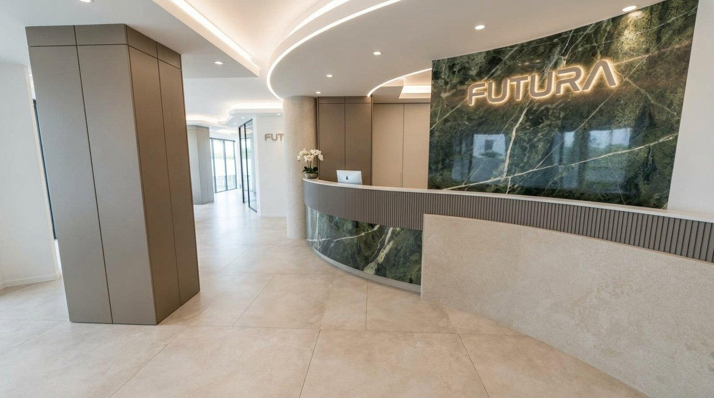
Caso studio · Futura Formazione Lavoro · Roma
Da qui si sale.
La nuova sede di Futura in Circonvallazione Nomentana: 674 m² di aule, reception, uffici e laboratorio, progettati, misurati e fatti vivere prima di aprire il cantiere.
La sfida
Un open space vuoto, una scuola da costruire.
Futura forma persone per il lavoro: OSS, scuola, digitale e AI, percorsi GOL. Serviva una sede con quasi 150 posti aula, con aule che si uniscono, un laboratorio senza finestre e una reception che parlasse del marchio. Il locale era un guscio con pilastri, vetrine su strada e un piano a due quote. Abbiamo consegnato tutto in un solo link: progetto, numeri e un modo per entrarci dentro.
674m² di intervento
147posti aula
22postazioni PC
328faretti LED
17settimane di cantiere
23tavole tecniche
95voci di capitolato
162combinazioni di finiture
Il metodo VISIO
Dal rilievo alla visita, un solo modello.
Ogni elaborato nasce dallo stesso modello 3D: se sposti una sedia, cambiano la tavola, il conteggio dei posti, il capitolato e il render.
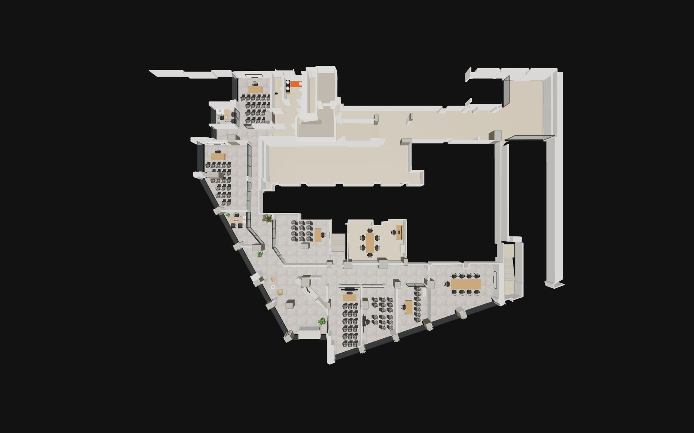
01 · Rilievo
Scansione 3D
Muri, pilastri, quote e vetrine dal rilievo laser, allineati alla planimetria.
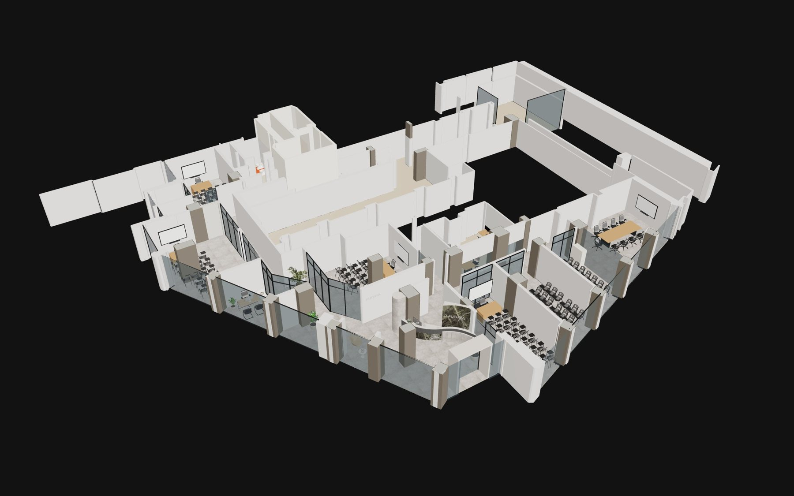
02 · Progetto
Modello 3D
Aule, uffici, reception, controsoffitti e arredi in un unico modello SketchUp.
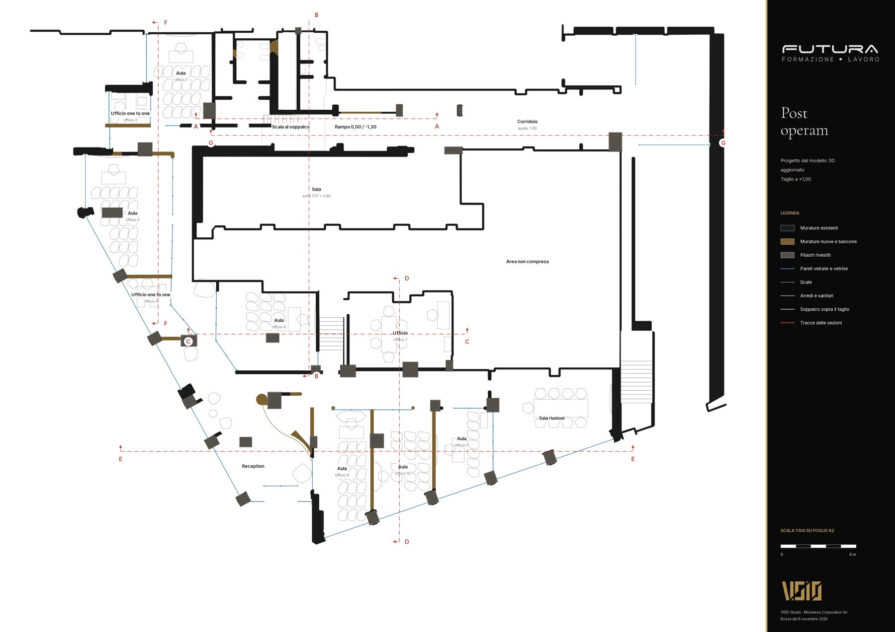
03 · Carte
Tavole e DWG
Piante, dettagli, sezioni, vetrate e controsoffitti, generati dal modello.
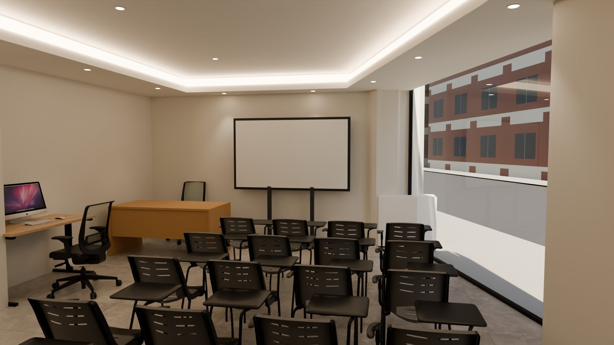
04 · Immagini
Render dal modello
Luce fisica in Blender: ogni immagine è il progetto vero, non un'illustrazione.
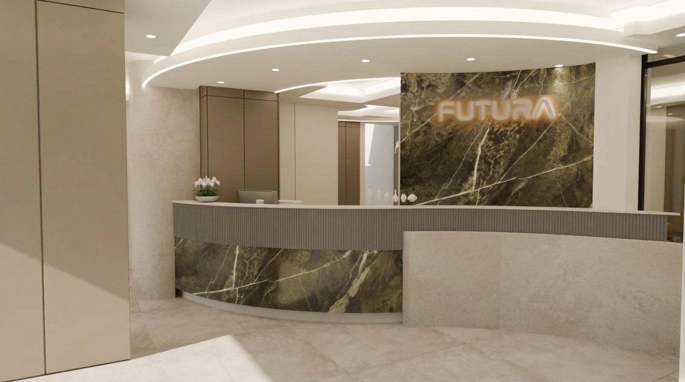
05 · Fotografia
Resa iperrealistica
Il render diventa una fotografia, controllata elemento per elemento sul modello.
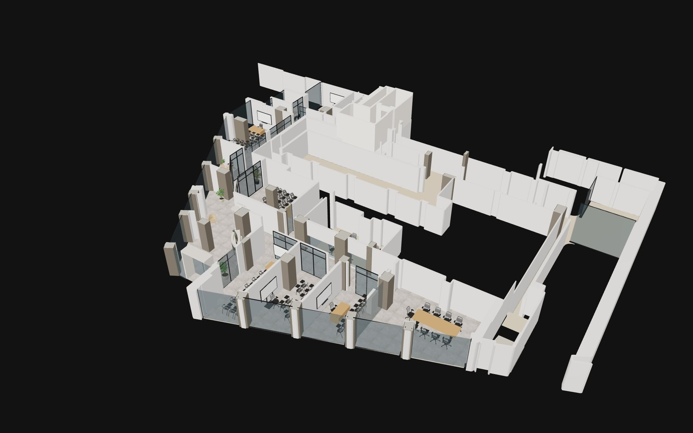
06 · Esperienza
Sito del cliente
Modello da camminare, cantiere 4D, tour 360, configuratore e capitolato in un link.
Prima e dopo
Trascina e guarda cosa cambia.
A sinistra lo stato di fatto dal rilievo, a destra il progetto con aule, uffici, laboratorio e reception.
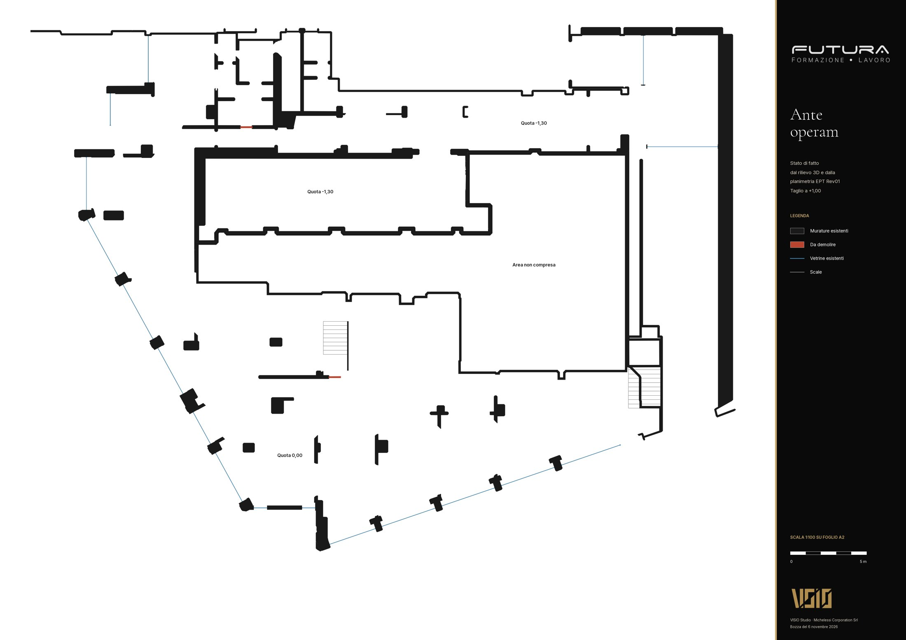
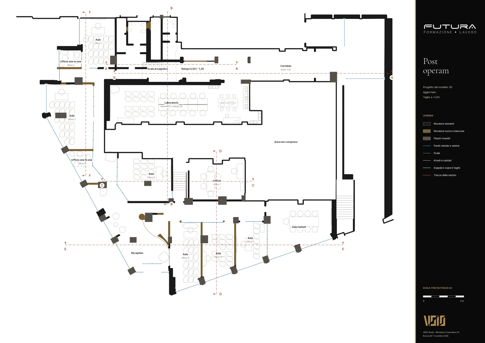
Dal modello alla fotografia
Stessa vista, due letture.
A sinistra il render fisico dal modello, con le ceramiche Florim reali. A destra la stessa inquadratura resa fotografica: luce, riflessi e materiali come li vedrà chi entra.
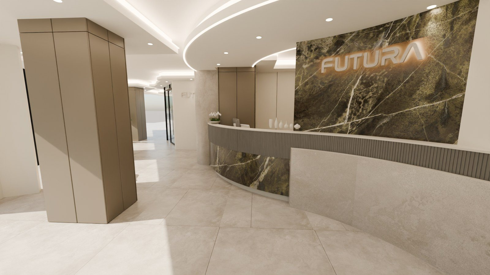
Modello 3DFotografiaEsperienze
Il cliente non guarda il progetto, ci entra.
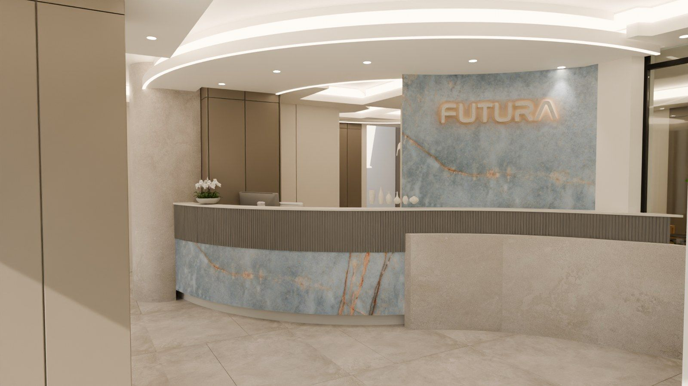
Configuratore
Scegli le finiture
Pilastri, pavimento, marmo e luce: 162 combinazioni renderizzate con ceramiche Florim vere.
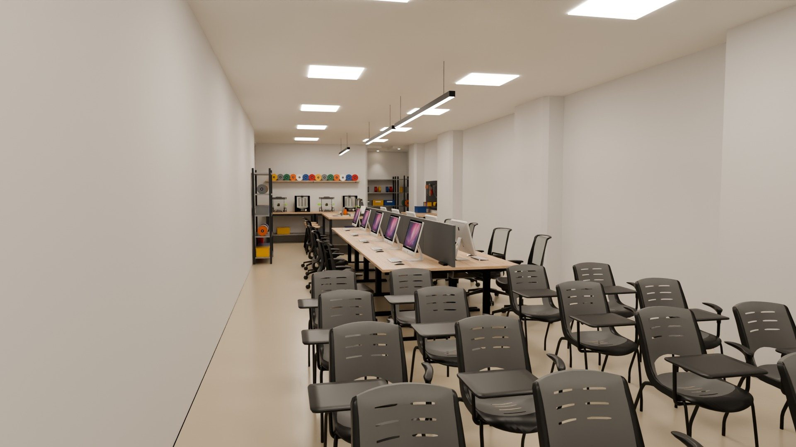
Tour 360
Cammina e accendi
Porte da attraversare, luci da accendere, giorno e sera, marmo da cambiare.
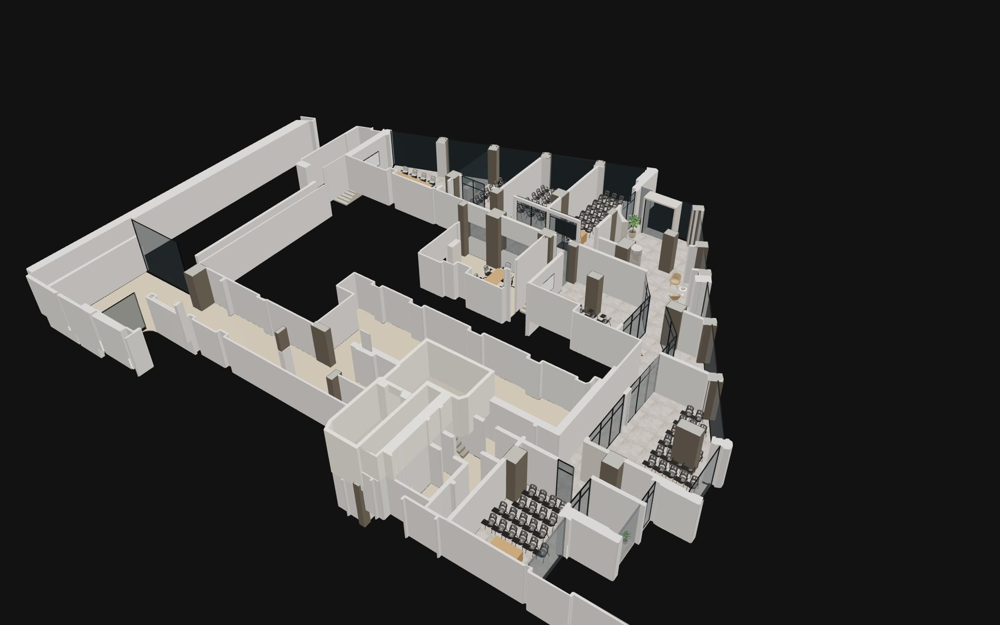
Cantiere 4D
Guarda costruire
Scorrendo la pagina la sede si monta pezzo per pezzo: pareti, rivestimenti, vetrate, controsoffitti, pavimenti e arredi, in 17 settimane.
Studio della luce
La luce, ora per ora.
La reception alle 9, alle 13, alle 17 e la sera, con il sole calcolato sull'orientamento vero del locale. Sotto, la luce sul piano di lavoro: le superfici diventano bianche e i colori dicono dove la luce è poca o tanta.
poca lucemediamolta luce
Immagine coordinata
Il marchio Futura dentro la sede.
Dal logo e dal sito di Futura: il blu del marchio, il punto rosso, il titolo in Outfit e la frase che li rappresenta, «Da qui si sale.». Lo spazio diventa riconoscibile da fuori, nei corridoi e nelle aule.
Blu Futura#005B8E · logo
Blu notte#003366 · titoli
Punto rosso#EA4B2B · accento
Giallo#FFCC00 · evidenze
Carta#F4F1EC · fondi
Da qui si sale.Outfit · titoli, insegne, segnaletica
Aula 12 · unibile all'Aula 11Inter · testi e indicazioni
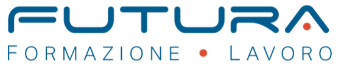
Da qui si sale.Formazione · LavoroCorsi 100% gratis
con il programma GOLSanità · Scuola
con il programma GOLSanità · Scuola
63 corsi
certificati
Regione LazioDigitale e AILun–Ven 9–19 · futurafl.it
certificati
Regione LazioDigitale e AILun–Ven 9–19 · futurafl.it
Vetrine su strada
Logo in vinile bianco sulla prima vetrina, messaggi del sito sulle altre, fascia satinata ad altezza occhi: dentro c'è privacy, da fuori si legge l'offerta.
Aula 11Unibile all'Aula 12
Aula 12LIM · postazioni PC
Vetrofanie delle pareti vetrate
Fascia satinata a puntini blu all'altezza degli occhi: protegge le lezioni, segnala il vetro e porta il nome dell'aula con il punto rosso del marchio.
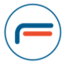
Aula 10LIM · lezioneLabPC · stampa 3D
Futura Factory
Futura Factory
Uff. 7Orientamento
NOAH
NOAH
Targhe delle stanze
20 x 20 cm in alluminio laccato, accanto alle porte: nome grande, cosa c'è dentro, la barra blu e rossa del logo.
- Reception ●
- Aule 9–12 →
- Aule 1–6 ←
- Laboratorio ↓
- Uffici ←
Da qui si sale.
41 persone assunte nel 2026Totem e parete di corridoio
Totem direzionale all'ingresso e la frase del marchio sulla parete lunga del corridoio, con i numeri del sito che cambiano ogni anno.
Corso OSSAllievo · 2026
Sede Nomentana
Sede Nomentana
Voglio
formarmi.
Accoglienza
Badge per gli allievi e cartellina con le tre porte d'ingresso del sito: cerco lavoro, voglio formarmi, sono un'azienda.
Nuova sede
Futura Factory
Il nuovo laboratorio digitale e stampa 3D.
Corsi GOL
147 posti aula. Corsi 100% gratis con GOL.
Lancio sui social
I render diventano i post dell'apertura, con il giallo delle evidenze e il blu del marchio.
Servizi VISIO
Cosa possiamo fare per ogni progetto.
In evidenza i servizi usati per Futura.
Rilievo
Scansione 3D e modello
Rilievo laser, modello dello stato di fatto, piante e quote affidabili.
Progetto
Tavole, DWG e capitolato
Piante, dettagli, sezioni, vetrate e controsoffitti; capitolato con quantità dal modello.
Immagini
Render e fotografia
Render fisici dal modello e versioni iperrealistiche controllate sul progetto.
Interattivo
Configuratore di finiture
Il cliente sceglie materiali reali di catalogo e vede ogni combinazione renderizzata.
Interattivo
Tour 360 con luci e porte
Panoramiche collegate, giorno e sera, varianti di materiale, mappa e visita automatica.
Interattivo
Modello 3D da camminare
Il progetto nel browser, anche da telefono, con luci accese, sera e soffitti.
Tempo
Cantiere 4D
Le fasi dei lavori sul modello, con il cronoprogramma settimana per settimana.
Luce
Studio della luce
Sole ora per ora, sera, mappe della luce sul piano di lavoro.
Marchio
Immagine coordinata nello spazio
Vetrine, vetrofanie, targhe, totem e accoglienza dal marchio del cliente.
Consegna
Sito dedicato al cliente
Un link riservato con tutto il progetto, aggiornato a ogni revisione.
Video
Video di presentazione
Camminata animata dal modello, orizzontale per il sito e verticale per i social.
Realtà aumentata
Arredi sul tavolo
Dal QR, il pezzo d'arredo o il modello in scala sul tavolo del cliente, senza app.
Il progetto Futura, tutto in un link.
Presentazione interna VISIO. La pagina del cliente resta riservata.
Pagina del clienteModello 3DConfiguratore